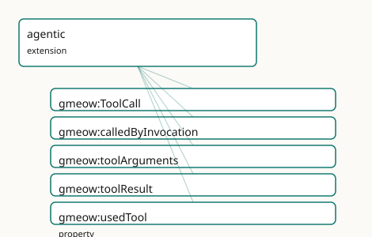

GMEOW Agentic Module
- IRI: https://blackcatinformatics.ca/gmeow/slices/agentic
- Tier: extension
Group: extensions
What This Slice Covers
This slice owns 5 terms and contributes 2 mapping or projection rows. Use it when its terms match the native fact you want to preserve; use the linkage tables to see how those facts leave GMEOW for consumer vocabularies.
Dependencies
gmeow:slices/aigmeow:slices/entitiesgmeow:slices/kernelgmeow:slices/provenancegmeow:slices/sourcesgmeow:slices/temporal
Consumers
ProjectLillith's agentic mode (P15): tool-call trajectories audited in the same provenance graph as the agent's claims. First live producer: the gmeow memory MCP triad records its own store/revise calls asToolCallprovenance. DELIBERATELY THIN: growth requires a new consumer; the size budget is recorded in docs.md.
Local Map

Examples
Agent Trajectory
- Source:
slices/extensions/agentic/examples/agent-trajectory.ttl - GMEOW terms:
gmeow:Document,gmeow:ModelInvocation,gmeow:SoftwareAgent,gmeow:ToolCall,gmeow:atTime,gmeow:calledByInvocation,gmeow:contentDigest,gmeow:eventTemporalFrame,gmeow:samplingTemperature,gmeow:temporalFrameUTCGregorian - External prefixes:
xsd
# SPDX-FileCopyrightText: 2026 Blackcat Informatics® Inc. <paudley@blackcatinformatics.ca>
# SPDX-License-Identifier: CC-BY-4.0
#
# Worked example : one agent turn as auditable provenance — a model
# invocation requests two tool calls; the entity the second call produced
# links BACK via gmeow:wasGeneratedBy (P5: no forward output property).
# Large payloads ride as content digest literals (the verbatim-or-digest
# doctrine); ordering is temporal (gmeow:atTime), not a TBox link.
@prefix gmeow: <https://blackcatinformatics.ca/gmeow/> .
@prefix ex: <https://blackcatinformatics.ca/gmeow/examples/> .
@prefix rdfs: <http://www.w3.org/2000/01/rdf-schema#> .
@prefix xsd: <http://www.w3.org/2001/XMLSchema#> .
ex:assistant a gmeow:SoftwareAgent ;
rdfs:label "assistant model agent"@en .
ex:webSearch a gmeow:SoftwareAgent ;
rdfs:label "web search tool"@en .
ex:storeClaim a gmeow:SoftwareAgent ;
rdfs:label "memory store_claim tool"@en .
ex:invocation-7 a gmeow:ModelInvocation ;
rdfs:label "turn 7 model invocation"@en ;
gmeow:usedModel ex:assistant ;
gmeow:samplingTemperature "0.2"^^xsd:decimal ;
gmeow:atTime "2026-06-12T17:03:10Z"^^xsd:dateTime ;
gmeow:eventTemporalFrame gmeow:temporalFrameUTCGregorian .
ex:call-7-1 a gmeow:ToolCall ;
rdfs:label "turn 7, call 1: search"@en ;
gmeow:calledByInvocation ex:invocation-7 ;
gmeow:usedTool ex:webSearch ;
gmeow:toolArguments "{\"query\": \"GTS deterministic encoding spec\"}" ;
# Large result: the digest IS the value (gmeow:contentDigest convention).
gmeow:toolResult "blake3:9f64a747e1b97f131fabb6b447296c9b6f0201e79fb3c5356e6c77e89b6a806a" ;
gmeow:atTime "2026-06-12T17:03:11Z"^^xsd:dateTime ;
gmeow:eventTemporalFrame gmeow:temporalFrameUTCGregorian .
ex:call-7-2 a gmeow:ToolCall ;
rdfs:label "turn 7, call 2: store a memory note"@en ;
gmeow:calledByInvocation ex:invocation-7 ;
gmeow:usedTool ex:storeClaim ;
gmeow:toolArguments "{\"text\": \"the GTS spec mandates RFC 8949 deterministic encoding\"}" ;
gmeow:toolResult "{\"ok\": true}" ;
gmeow:atTime "2026-06-12T17:03:14Z"^^xsd:dateTime ;
gmeow:eventTemporalFrame gmeow:temporalFrameUTCGregorian .
# The produced entity links BACK to the call that wrote it (P5).
ex:note-2200 a gmeow:Document ;
rdfs:label "stored memory note"@en ;
gmeow:wasGeneratedBy ex:call-7-2 ;
gmeow:wasAttributedTo ex:assistant .
Terms
Classes
| Term | Label | Definition |
|---|---|---|
gmeow:ToolCall |
Tool Call | One invocation of a tool by an agent: the tool agent (gmeow:usedTool), the requesting model invocation when known (gmeow:calledByInvocation), and the verbatim... |
Properties
| Term | Label | Definition |
|---|---|---|
gmeow:calledByInvocation |
called by invocation | The model invocation that requested this tool call. Functional: one requesting invocation per call. Optional: a recording harness may not expose the invocation... |
gmeow:toolArguments |
tool arguments | The verbatim arguments payload presented to the tool (typically JSON), byte-faithful. For large payloads store a content digest literal instead ('blake3:…' — t... |
gmeow:toolResult |
tool result | The verbatim result payload the tool returned, byte-faithful — the PAYLOAD of the event, never a forward entity link: an entity the call produced links back vi... |
gmeow:usedTool |
used tool | The tool that was called — a SoftwareAgent (an MCP tool, a search service, a code runner). Deliberately no Tool subclass: tool-ness is the role the agent plays... |
Linkages
- Rows: 2
- Projection profiles: -
- External vocabularies:
schema,wd
| Source | Kind | Profile | Predicate/Relation | Target | Evidence |
|---|---|---|---|---|---|
gmeow:ToolCall |
equivalence | - |
skos:relatedMatch | schema:Action | gmeow-agentic.sssom.tsv; gmeow:eqAg002; confidence 0.6 |
gmeow:ToolCall |
equivalence | - |
skos:relatedMatch | wd:Q62270 | gmeow-agentic.sssom.tsv; gmeow:eqAg001; confidence 0.5 |
Guide
The Agentic extension — the agent's actions as auditable provenance
The graphrag extension made the pipeline auditable; this slice makes the agent's
actions auditable. A tool call is an event in the same provenance graph as
the claims it produces: gmeow:ToolCall follows the ModelInvocation idiom exactly — a
gufo:EventType under gmeow:Activity with one functional agent link and verbatim call
payloads — so "which tool, called by which invocation, with what arguments, at what
time?" is answerable after the fact, with no new provenance machinery (Principle 4).
The named consumer is Project Lillith's agentic mode (Principle 15), and the first live
producer ships in this repo: the gmeow memory MCP triad records its own store_claim
and revise_belief calls as ToolCall provenance, so the P14 memory flagship's actions
are themselves grounded memory.
Deliberately thin: five terms. Trajectory aggregates (runs, episodes, plans) wait for a
consumer that needs them; growth requires a new consumer, not modeling pleasure.
The call event
gmeow:ToolCall
One invocation of a tool by an agent — the ModelInvocation idiom one level down. A
gufo:EventType under gmeow:Activity, so the temporal slice's clocks (gmeow:atTime)
and the provenance slice's lineage (gmeow:wasGeneratedBy, gmeow:wasAttributedTo)
apply unchanged. The doctrine that matters most is what ToolCall does not have: a
forward output entity property. An entity the call produced — a stored claim, a written
file, a minted node — links back via gmeow:wasGeneratedBy (Principle 5), exactly as
a generated claim links back to its gmeow:ModelInvocation. A multi-tool turn is
several ToolCalls, never one fat one (closed-world sh:maxCount twins gate every
functional property).
gmeow:calledByInvocation
The model invocation that requested the call — the seam joining the action trajectory to
the generation trajectory. Functional, and deliberately optional: a recording
harness may not expose the invocation, and a ToolCall without one is still auditable
provenance. The call's result feeding a later invocation is temporal ordering
(gmeow:atTime), not a TBox link.
gmeow:usedTool
The tool that was called, mirroring gmeow:usedModel. The range is gmeow:SoftwareAgent
and there is deliberately no Tool subclass: tool-ness is the role the agent plays in
this call event, not an identity (roles classify, never reify — the Persona lesson). An
MCP tool, a search service, and a code runner are SoftwareAgents that happen to be
called. One tool per call, functional.
The payloads
gmeow:toolArguments · gmeow:toolResult
The verbatim, byte-faithful payloads of the call — what was asked and what came back.
These record the payload of the event, never an entity link; gmeow:toolResult is
the JSON the tool returned, not the thing it created. For large payloads the
verbatim-or-digest doctrine applies: store a content digest literal ("blake3:…" — the
gmeow:contentDigest convention from the sources slice) instead of the bytes; the
digest is the value, resolvable from a content-addressed store, and the self-describing
prefix keeps the two forms distinguishable. At most one arguments record and at most one
result record per call — both optional (functional, with closed-world twins).
Cross-slice bridges
- ai —
gmeow:calledByInvocationtargetsgmeow:ModelInvocation; a claim'sgmeow:wasGeneratedBychain now reaches through the invocation and the calls it requested. - provenance — produced entities link back via
gmeow:wasGeneratedBy; agent responsibility ridesgmeow:wasAttributedTo, unchanged. - sources — the digest-literal convention for large payloads is
gmeow:contentDigest's ("blake3:…","sha256:…"), reused verbatim. - temporal —
gmeow:atTimeorders calls within a turn; no sequence machinery is minted here.
Alignments
gmeow:ToolCall is prov:Activity by inheritance through gmeow:Activity (the
provenance alignment set). Wikidata's nearest stable entity is the mechanism, not the
event (wd:Q62270, remote procedure call — relatedMatch). OpenAI function-calling,
Anthropic tool_use, and MCP tool schemas are JSON specifications with no stable RDF
namespace: bridging them is a projection concern (Workflow Run Crate, the
OpenLineage precedent), recorded as REFUSED cells in the mapping trailer rather than
papered over.